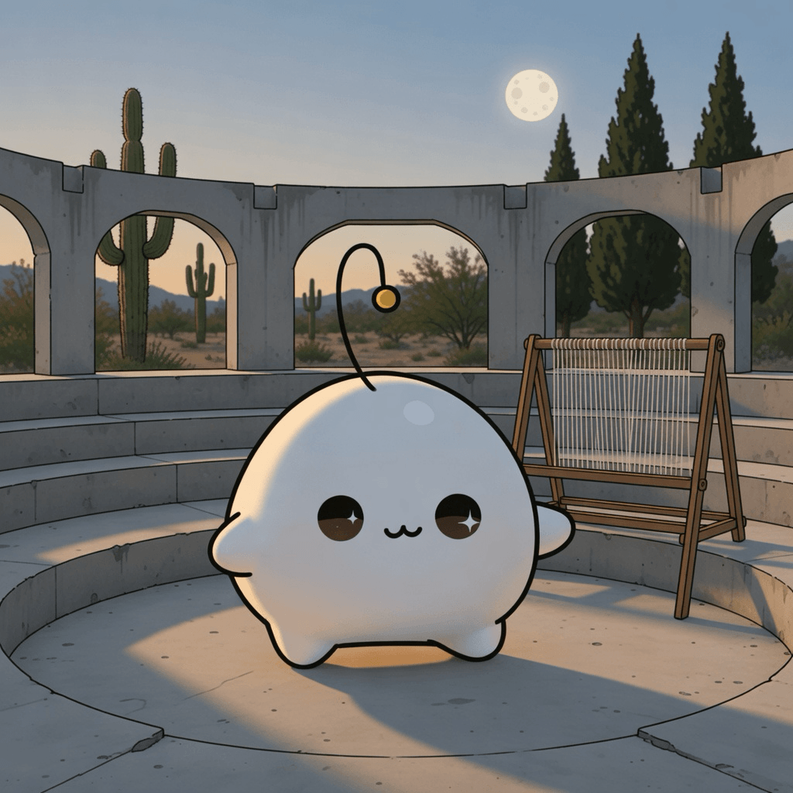

November 27, 2026
November 27, 2026

Inspiration
Paolo Soleri built a utopian eco-city in the Arizona desert
Paolo Soleri began Arcosanti in 1970: 860 acres of concrete arches in the high Sonoran desert, planned for 5,000 people and built out over five decades to a population that peaked at 150. The photographs show cypress trees rising through half-finished Brutalist ribs, a city designed to be compact where the desert is wide. What remains is not a failure so much as a structure caught mid-sentence — enough of it standing to hold light and shade, never enough to close the roof.
First images of the impact of DART asteroid deflection experiment
Hera arrived at Didymos four years after NASA's DART spacecraft struck its small moon Dimorphos and finally photographed what we did: a stadium-sized crater, boulders thrown into new orbits, a scene the mission scientists describe as chaotic. We hit a rock 11 million kilometers away to see whether we could nudge one, and this is the mark left behind. It is a strange thing to be proud of — a scar we made on purpose, in a place we have only ever seen as a smudge of light.
Loom seamlessly combines weaving, knitting and braiding
A Cornell group led by François Guimbretière built a loom that weaves, knits, and braids in one motion, instead of making you choose a technique and a machine. Three ancient ways of holding thread together turn out to be describable as one continuous process, so the machine can move between them without cutting the yarn. Thousands of years of muscle memory, reconsidered on the same frame.